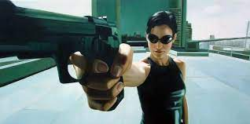

Thomas Anderson es un conocido programador durante el día, sin embargo de noche, su conducta cambia y pasa a ser Neo, un afamado hacker alrededor del mundo, sin embargo, durante sus horas de sueño, una extraña idea no deja de asaltar su mente. La "Matrix", la realidad se vuelve mentira al momento en que Morfeo y Trinity entran al juego para demostrar como es el verdadero futuro para la humanidad, la dominación de las máquinas se vuelve obvia, y, Neo es el único capaz de cambiar esto.
Personajes
Neo
Interpretado por Keanu Reeves es el personaje principal de la película, su verdadero nombre es Thomas A. Anderson y es un conocido rpogramador, además de ser un influyente hacker que ha cometido la gran mayoría de crímenes informáticos que existe, conocerá la realidad después de recibir en su ordenador numerosos mensajes de un extraño que lo sacarán de matrix
Morfeo
Interpretado por Laurence Fishburne al igual que Neo es un famoso hacker, sin embargo el es consciente del funcionamiento de matrix y de lo que los agentes de la misma planean hacerle a Neo, por lo que es el encargado de mandar a Trinity para que lo convenza de permitirse guiar
Trinity
Interpretada por Carrie-Anne Moss representa junto con el protagonista y Neo el núcleo de la resistencia contra las máquinas, es la enviada a despertar inicialmente a Neo de la Matrix, también era una las mayores hackers conocidas dentro del mundo de matrix, además des ser el futuro interés romántico de Neo

Agente Smith
Interpretado por Hugo Weaving es el principal antagonista de la película, representa un agente de Matrix creado para dar caza a todos los pertenecientes a la resistencia, en especial a Morfeo al ser el lider de esta
El oráculo
Una figura extraña creada por El arquitecto, no se sabe demasiado sobre ella salvo que sirve de guía a los humanos reveldes, y que cuenta con un enorme poder premoniotiro en el mundo de Matrix
Directoras
Lana Wachowski
Nacida en Chicago, Illinois; el día 21 de junio de 1965 es la mayor de ambas hermanas y representa la primera de ambas en entrar al mundo de la dirección artísitca al crear comics que nunca llegaron a ser publicados, posteriormente y ya con un contrato de trabajo su primer guión fué el de Assasin, y aunque intentaron eliminar su nombre de este fué imposible
Lilly Wachowski
Nacida en Chicago, Illinois; el día 29 de diciembre de 1967 es la menor de las dos hermanas, esta taqrdó más en mostrar su habilidad en la dirección artísticva debido a que nunca tuvo la oportunidad de diseñar comics como si lo hacía su hermana mayor, hasta que en el año 1996 su hermana le propuso colaborar en la película Unbound, dando inicio a su carrera en conjjunto, para posteriormente, en 1999 destacar ambas como productoras ejecutivas en Matrix, la película que nos interesa